5F
| Input Shaft Disassembly and Reassembly |
Using an inappropriate hydraulic press or bearing puller could cause personal injury.
Use the hydraulic press and bearing puller which are capable of safely bearing a load of at least 5 tons (11,000 lbs).
NOTICE:
Supporting the gear on the concave side of the puller can cause damage to the gear.
Support the gear on the flat side of the puller.
NOTE:
Needle bearings in the outer input shaft are difficult to be removed.
If outer input shaft is replaced with new one, install new needle bearings to the shaft.
Disassembly
Outer input shaft
1)Remove inner input shaft (1) and washer (2) from outer input shaft (3).

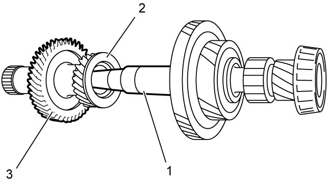
 "Expand image")
2)Support outer input shaft (1) with soft jawed vise and cloth, and remove inner oil seal (2) from outer input shaft using special tools.
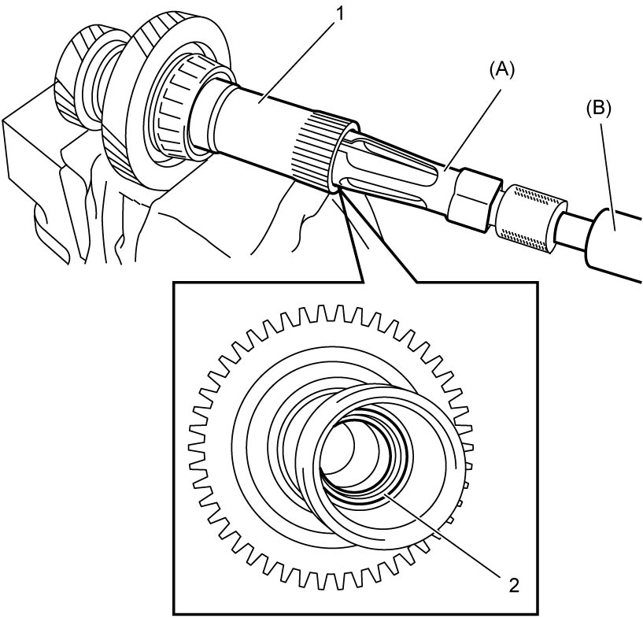
 "Expand image")
3)Remove outer input shaft bearing (1) using hydraulic press.
NOTE:
Do not reuse outer input shaft bearing.
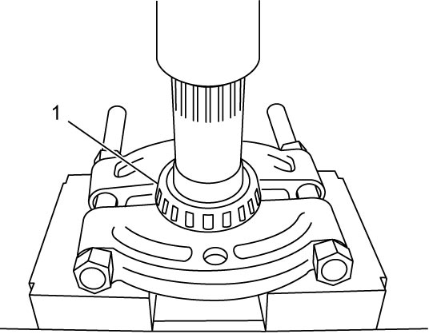
 "Expand image")
Inner input shaft
1)Remove outer input shaft thrust bearing (1).
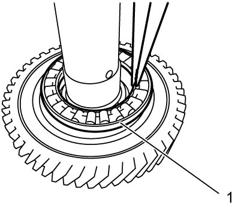
 "Expand image")
2)Remove circlip (1) using snap ring pliers (2).
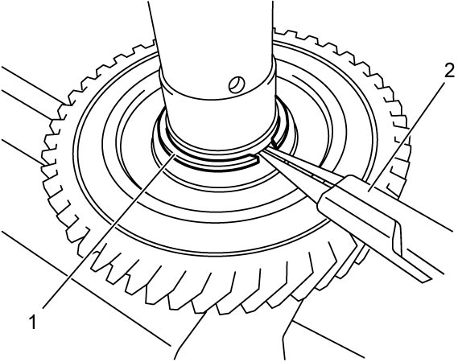
 "Expand image")
3)Remove 3rd gear (under the 5th gear together) with 5th gear (1) using hydraulic press.
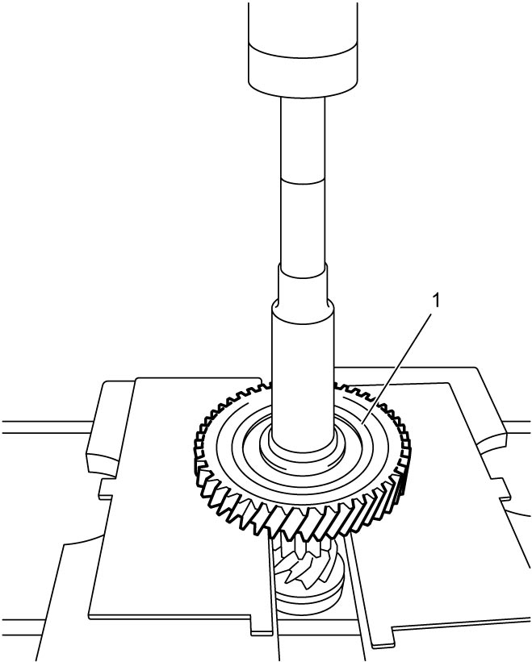
 "Expand image")
4)Remove inner input shaft bearing (1) using special tool and hydraulic press.
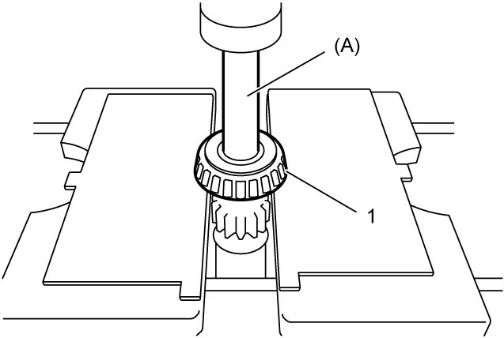
 "Expand image")
Reassembly
NOTE:
Needle bearings in the outer input shaft are difficult to be removed.
If outer input shaft is replaced with new one, install new needle bearings to the shaft.
Outer input shaft
1)Install new outer input shaft bearing (1) using special tool and hydraulic press.
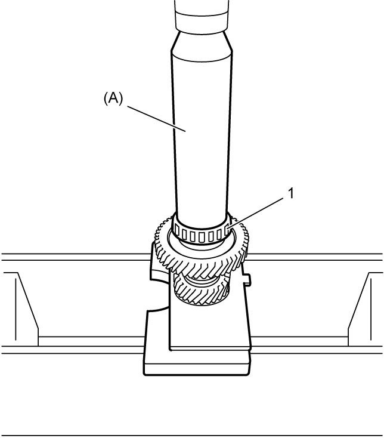
 "Expand image")
 "Expand image")
 "Expand image")
 "Expand image")
Inner input shaft
1)Install 3rd gear (1) using hydraulic press.
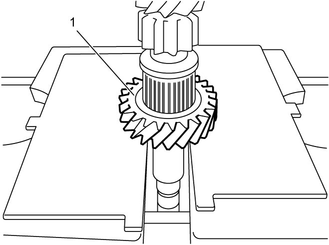
 "Expand image")
2)Install 5th gear (1) using hydraulic press.
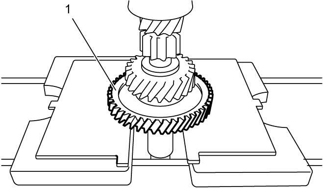
 "Expand image")
3)Install inner input shaft bearing (1) using special tool and hydraulic press.
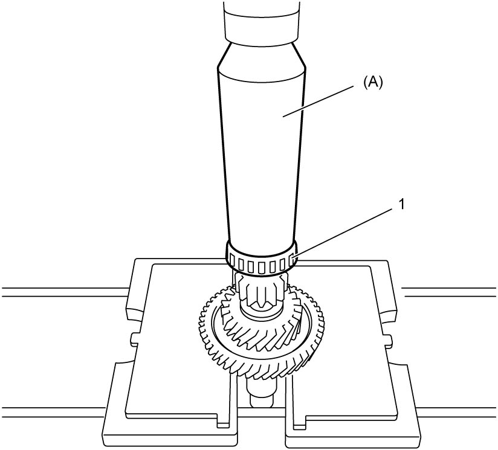
 "Expand image")
4)Select new circlip as follows.
a)Measure clearance “a” between groove (1) of inner input shaft and 3rd gear (2) with feeler gauge (3).
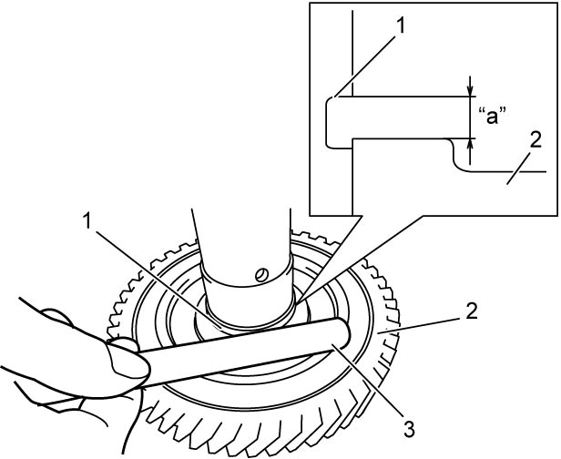
 "Expand image")
b)Select a circlip closest to the clearance “a” from the following available sizes.
Available circlip thickness
| Clearance “a” | Select circlip |
|---|---|
| 1.860 – 1.890 mm (0.0732 – 0.0744 in.) |
1.860 mm (0.0732 in.) |
| 1.890 – 1.920 mm (0.0744 – 0.0756 in.) |
1.890 mm (0.0744 in.) |
| 1.920 – 1.950 mm (0.0756 – 0.0768 in.) |
1.920 mm (0.0756 in.) |
| 1.950 – 1.980 mm (0.0768 – 0.0780 in.) |
1.950 mm (0.0768 in.) |
| 1.980 – 2.010 mm (0.0780 – 0.0791 in.) |
1.980 mm (0.0780 in.) |
| 2.010 – 2.040 mm (0.0791 – 0.0803 in.) |
2.010 mm (0.0791 in.) |
| 2.040 – 2.070 mm (0.0803 – 0.0815 in.) |
2.040 mm (0.0803 in.) |
| 2.070 – 2.100 mm (0.0815 – 0.0827 in.) |
2.070 mm (0.0815 in.) |
| Over 2.100 mm (0.0827 in.) | 2.100 mm (0.0827 in.) |
5)Install new circlip (1) using snap ring pliers (2).
6)Install inner input shaft thrust bearing (1).
7)Install inner input shaft (1) and washer (2) to outer input shaft (3).
8)After replacing transaxle inner parts, perform TCM and Clutch Initialization.